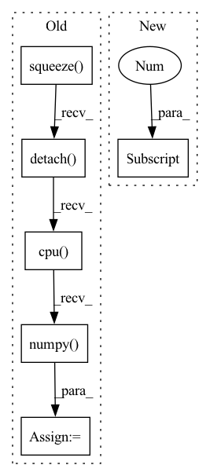

Pattern ID :28666

Before Change
signal_tensor = torch.tensor(signal[0])
pt_gaussian = GaussianFilter(len(signal_tensor.shape), sigma=self.sigma)
signal_tensor = pt_gaussian(signal_tensor.unsqueeze(0).unsqueeze(0))
signal_tensor = signal_tensor.squeeze(0).squeeze(0)
signal[0] = signal_tensor.detach().cpu().numpy()
signal[0] = (signal[0] - np.min(signal[0])) / (np.max(signal[0]) - np.min(signal[0]))
d["signal"] = signal
else:
After Change
)
X, Y, Z = (
list(d["centroids"][d["current_idx"]].values())[0][-3],
list(d["centroids"][d["current_idx"]].values())[0][-2],
list(d["centroids"][d["current_idx"]].values())[0][-1],
)
In pattern: SUPERPATTERN
Frequency: 3
Non-data size: 6
Instances
Fragment ID: 84566794
Project Name: project-monai/monailabel
Commit Name: f45854cefd4034e2f4740c50a834443df48dfc65
Time: 2022-08-06
Author: diazandr3s@gmail.com
File Name: sample-apps/radiology/lib/transforms/transforms.py
M Class Name: GaussianSmoothedCentroidd
N Class Name: GaussianSmoothedCentroidd
M Method Name: __call__(2)
N Method Name: __call__(2)
M Parent Class: MapTransform
N Parent Class: MapTransform
M File Name: sample-apps/radiology/lib/transforms/transforms.py
N File Name: sample-apps/radiology/lib/transforms/transforms.py
M Start Line: 157
M End Line: 182
N Start Line: 181
N End Line: 206
'>
Before Change
with torch.no_grad():
self.sbiobert_model.eval()
encoded_layers, test = self.sbiobert_model(preprocessed_sentence, segments_tensors)
sentence_encoding = encoded_layers[-1].squeeze().mean(axis=0)
embedding = sentence_encoding.detach().cpu().numpy()
return embedding
After Change
https://huggingface.co/transformers/model_doc/bert.html//transformers.BertModel
with torch.no_grad():
last_hidden_state = self.sbiobert_model(**preprocessed_sentence.to(self.device))[0]
embedding = self.masked_mean(last_hidden_state,
preprocessed_sentence["attention_mask"])
return embedding.squeeze().cpu().numpy()
'>
Fragment ID: 84566798
Project Name: bluebrain/search
Commit Name: 6eb30c8b3e77791ee4e407dd19d7a5e08fe5e132
Time: 2020-09-04
Author: jankrepl@yahoo.com
File Name: src/bbsearch/embedding_models.py
M Class Name: SBioBERT
N Class Name: SBioBERT
M Method Name: embed(2)
N Method Name: embed(2)
M Parent Class: EmbeddingModel
N Parent Class: EmbeddingModel
M File Name: src/bbsearch/embedding_models.py
N File Name: src/bbsearch/embedding_models.py
M Start Line: 120
M End Line: 127
N Start Line: 193
N End Line: 197
'>
Before Change
// Draw keypoint matches
src = out["src_rc"][-1].squeeze().detach().cpu().numpy()
tgt = out["tgt_rc"][-1].squeeze().detach().cpu().numpy()
match_weights = np.exp(out["match_weights"][-1].squeeze().detach().cpu().numpy())
keypoint_ints = out["keypoint_ints"]
ids = torch.nonzero(keypoint_ints[-1, 0] > 0, as_tuple=False).squeeze(1)
After Change
// Draw scores
scores = out["scores"][-1]
if scores.size(0) == 3:
scores = scores[1] + scores[2]
scores = scores.squeeze().detach().cpu().numpy()
plt.imshow(scores, cmap="inferno")
plt.colorbar()
plt.title("log det weight (weight score vis)")
'>
Fragment ID: 84566799
Project Name: utiasasrl/hero_radar_odometry
Commit Name: c1043c84c77f1a20b667d981d4cd286cb378c71a
Time: 2021-01-25
Author: david.yoon@robotics.utias.utoronto.ca
File Name: utils/vis.py
M Class Name: AnonimousClass
N Class Name: AnonimousClass
M Method Name: draw_batch_steam(3)
N Method Name: draw_batch_steam(3)
M Parent Class:
N Parent Class:
M File Name: utils/vis.py
N File Name: utils/vis.py
M Start Line: 55
M End Line: 134
N Start Line: 95
N End Line: 122